| Name |
Picture |
Type |
Price |
Magazine |
Wall Penetration |
Damage Stat |
Small Description |
| Vandal |
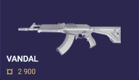 |
Rifle |
¤2900 |
25 |
Medium |
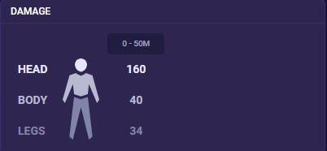 |
Powerful assault rifle with high accuracy, one-shot headshots at any range. Best used with tap firing for precision. |
| Phantom |
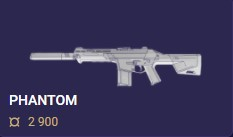 |
Rifle |
¤2900 |
30 |
Medium |
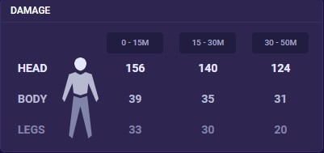 |
Silent fire, high fire rate, and user-friendly design make the Phantom ideal for new players, even after an ammo nerf. |
| Operator |
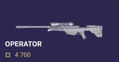 |
Sniper Rifle |
¤4700 |
5 |
High |
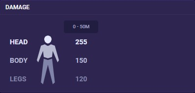 |
One-shot kills justify Operator's cost, ideal for aggressive picks on any map. |
| Judge |
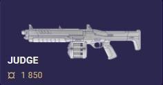 |
Shotgun |
¤1850 |
12 |
Low |
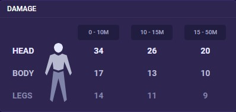 |
Judge forces strategic utility use due to its close-range power, making it viable on all maps. |
| Odin |
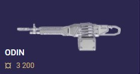 |
LMG |
¤3200 |
100 |
High |
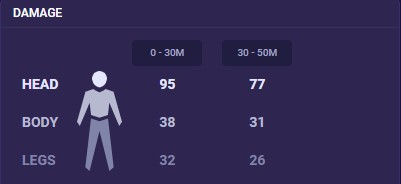 |
Odin excels in defense with wall-bangs and mowing down enemies close-up. Easy to use even in lower ranks, but strong with teamwork at any level. |
| Stinger |
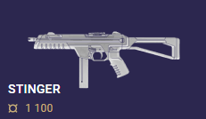 |
SMG |
¤1100 |
35 |
Medium |
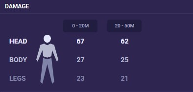 |
Stinger dominates close quarters, but limited mag and high spread make it risky. Best for coordinated light buy pushes. |
| Spectre |
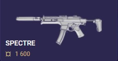 |
SMG |
¤1600 |
30 |
Medium |
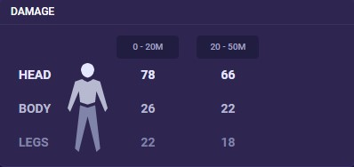 |
Spectre is a reliable buy after pistol rounds, good at close range against rifles and other pistols |
| Frenzy |
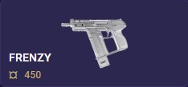 |
Pistol |
¤450 |
13 |
Low |
|
Very cheap pistol with a low fire rate. Best used for buying in pistol rounds. |
| Shorty |
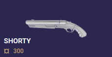 |
Shotgun |
¤300 |
2 |
Low |
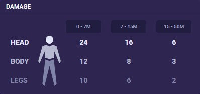 |
Shorty's power faded due to price hikes and range nerfs. Now a niche buy for Operator/Outlaw users with extra cash. |
| Bucky |
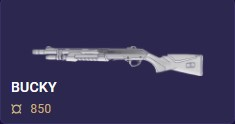 |
Shotgun |
¤850 |
5 |
Low |
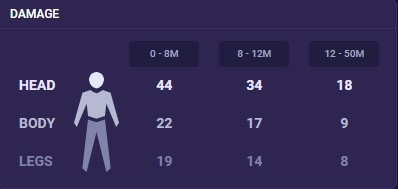 |
Bucky trails Judge in most situations: weaker, slower fire rate, one kill potential. Right-click is bad. Niche use for close-range light buys. |
| Outlaw |
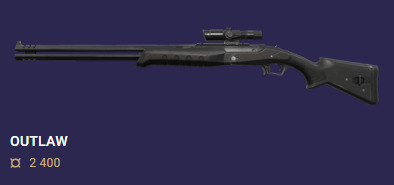 |
Sidearm |
¤ 2,400 |
2 |
High |
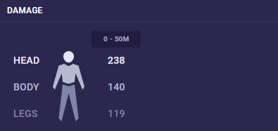 |
Outlaw's high damage and rapid fire punish enemies, while its reload demands respect and skilled use. |
| ares |
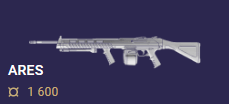 |
heavy |
¤1600 |
50 |
high |
|
Ares aspires to be Odin on a budget, but its inaccuracy in all firing modes holds it back. |
| knife |
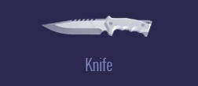 |
Rifle |
0 |
25 |
Medium |
NaN |
Knife is a last resort weapon (bad hit reg) but has niche uses like destroying Astra walls. |
| sheriff |
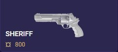 |
Sidearm |
¤800 |
6 |
high |
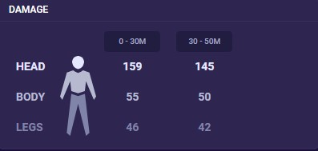 |
Sheriff = powerful mid-range pistol. Not ideal close or long. |
| Marshall |
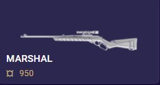 |
sniper Rifle |
¤950 |
5 |
Medium |
|
Marshall excels on long maps as an eco buy: one-shot kills, jiggle peeks, good handling. |
| Ghost |
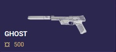 |
Sidearm |
¤500 |
15 |
Medium |
|
Ghost's cheap price is great for pistol rounds (one-shot headshot), but outclassed by Sheriff later. |
| Bulldog |
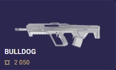 |
Assault Rifle |
¤2050 |
24 |
Medium |
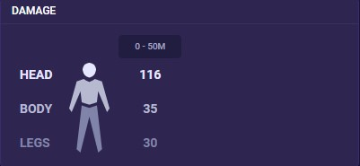 |
Bulldog: Lower damage than Vandal/Phantom, weak close-up, good mid-range with burst (one-taps full armor with headshot + bodyshot). |
| Guardian |
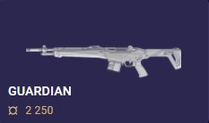 |
DMR |
¤2250 |
12 |
high |
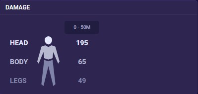 |
Underwhelming alternative to rifles, good for half-armor kills and wall bangs, but overshadowed by Outlaw.. |
| Classic |
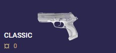 | >
Sidearm |
¤0 |
12 |
low |
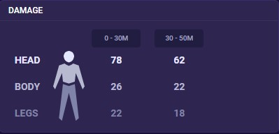 |
Budget-friendly option for pistol rounds (more credits for utility), but right-click nerf hurt effectiveness. |